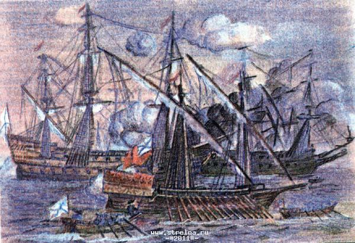
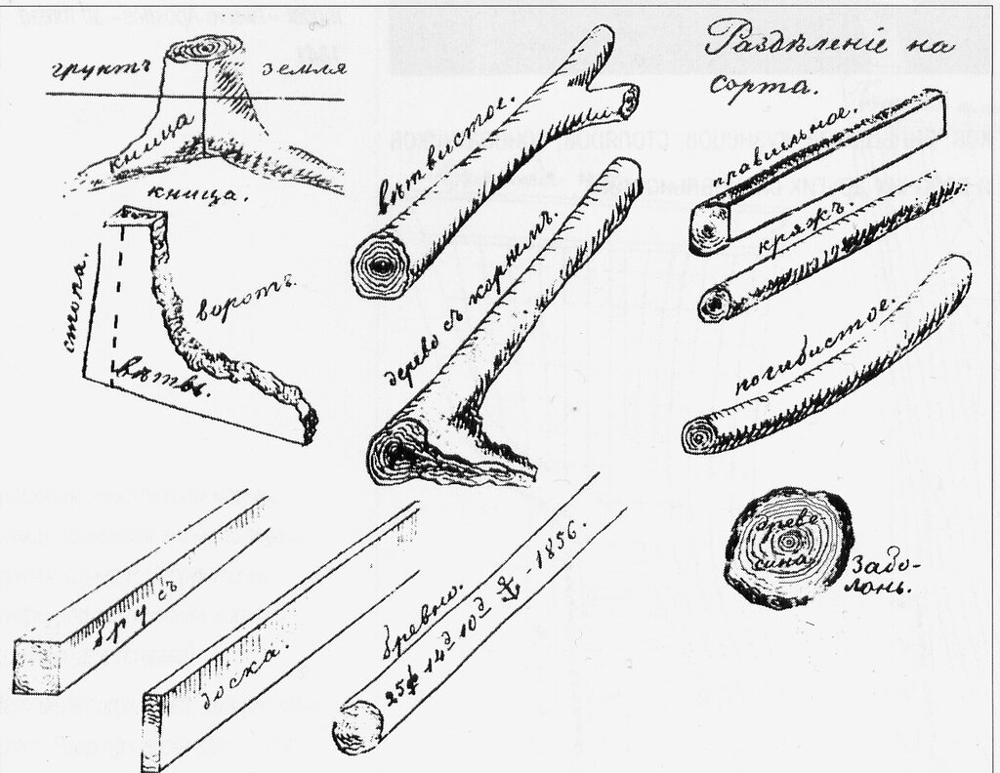

Раз уж начали мы отвечать на вопросы из комментариев, которые повисли без ответа из-за необходимости привлекать обширный документальный материал, сделаем еще один шаг в этом направлении. Речь на этот раз пойдет о потребности в деловой древесине для постройки галер и парусных кораблей. Остановимся в этот раз на кораблях русского флота первой половины XVIII века. А в качестве документальной основы используем протоколы, журналы и указы Верховного тайного совета 1726-1730 гг., опубликованные в сборнике Русского исторического общества.
Исторически так сложилось, что, начиная с царствования Петра I заготовкой корабельного леса в Азовской и Казанской губерниях и доставкой его к местам строительства кораблей, в адмиралтейства, занимались «иноверцы» («уездные люди Казанской губернии»). Указом от 31 января 1718 года повелевалось для работ по вырубке и доставке корабельных лесов «брать служилых мурз, татар, мордву и чуваш без всякой платы, а с тех из них, которые живут слишком далеко от лесных дач, собирать деньги для найма вольных рабочих» (цит. по словарю Брокгауза и Ефрона). Так в России образовалось особое сословие "лашманов" (Laschmann, от нижне-немецкого laschen — обрубать, отесывать, обделывать и Маnn — человек). Лашманы сильно тяготились возложенными на них натуральными повинностями, заставлявшими их отлучаться из дома за 300—500, а в некоторых селах даже за 800—1000 верст, как, например, для заготовки лиственницы по реке Чусовой. Поэтому, с течением времени, «иноверцы» стали нанимать вместо себя «других работных людей, пеших по осьми копеек, конных по шестнадцати копеек», что привело к существенному росту стоимости заготовки леса. Наглядно этот процесс можно проследить на работах по заготовке леса для двух галер и одного фрегата.

Галеры и фрегаты
Если в 1727 году заготовка леса корабельным мастером Рамзом «вырубкою н вывозкою на пристани и окладкою по лекалам со всем приготовлением, зачетом по плакату подушных денег иноверцам» обошлась:
32-пушечный корабль – 9.516 руб.
Галера одна 677 руб. 16 коп., а две 1.355 р. 32 к.,
итого 10.870 р. 32 к.
то в 1729 году подрядчик Утятников за такие же работы запросил:
32-пушечный корабль 15.647 руб. 65 коп.
Галера 1.354 руб. 32 коп., а две 2.708 р. 64 к.,
итого 18.356 р. 29 к.
Таким образом, Утятниковъ запросил больше почти в полтора раза.
Кроме того, за отвоз корабельных лесов до Ладоги подрядчики просили
За 32-пушечный корабль – 9.484 руб.
За 1 галеру 818 руб. 50 коп., а за две 1.637 руб.,
итого 11.121 руб.
Эти цифры интересны сами по себе, но сейчас мы должны ответить, как обещали, на вопрос о количестве леса, потребного для строительства одного фрегата и одной галеры.

Ответ этот можно найти в Табели, приложенной к указу Государственной Адмиралтейской Коллегии от 25 февраля 1729 года. Этим документом определяется заготовлять
для 32-пушечного фрегата:
Дерев................ 1.155
Досок.................. 1.160
Да мелочных лесов к блочному артиллерийскому делу:
Досок................. 100
Кряжей................... 35
Брусков................ 60
На боты:
На палубный один......... 323
На беспалубный один....... 144
На шлюпки:
На 12-весельную.......... 121
На 10-весельную........... 113
На 8-весельную........... 110
На 6-весельную........... 104
в галерный флот:
на галеру дубовых лесов:
На 16-баношную.............................. 615
На 20-баношную.............................. 682
На 22-баношную........................... 746
Да окромя оных на одну галеру досок........... 41
Къ каждой галере мелочных лесов
на 1 бот венецианскаго дела, дерев и досок............... 119
На шлюпку 10-весельную....................... 99
Да по прежним табелям 1720 года бочешнаго леса по 3 и по 4 ведра на 62 бочонка.
Данная ссылка дает ответ на вопрос о количестве леса, потребного для строительства одного фрегата и двух галер. Но, естественно, вырубалось леса значительно больше. Была необходимость компенсировать бракованный лес после контроля его качества:
«Которыя доски явятся с концов или в средине с гнилью, или с ситовиною и те бы гнилыя места вырубить и принимать здоровыми на меру долготою до пятнадцати фут, две за одну доску.»
В итоге вырубалось больше деревьев, чем по расчету:
«ибо на оный фрегат и на две галеры по табели дерев и досок требуется 3.849 штук, а для онаго числа ему довлеет приискать в лесах и с корени срубить разве до 5.000 дерев и более».
Данный материал, как мне кажется, может послужить оценкой приводимых в нашей литературе сведений о расходах леса на постройку военных кораблей в России.